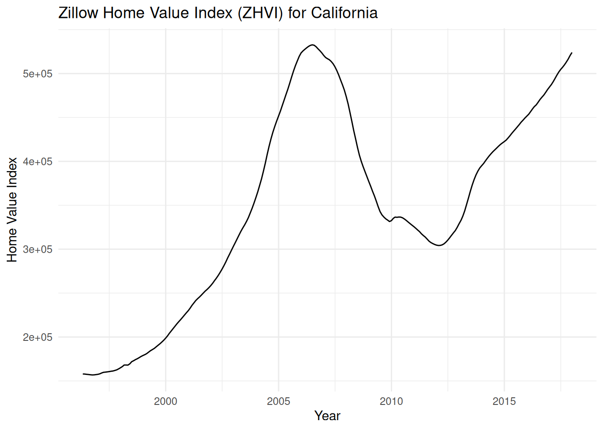
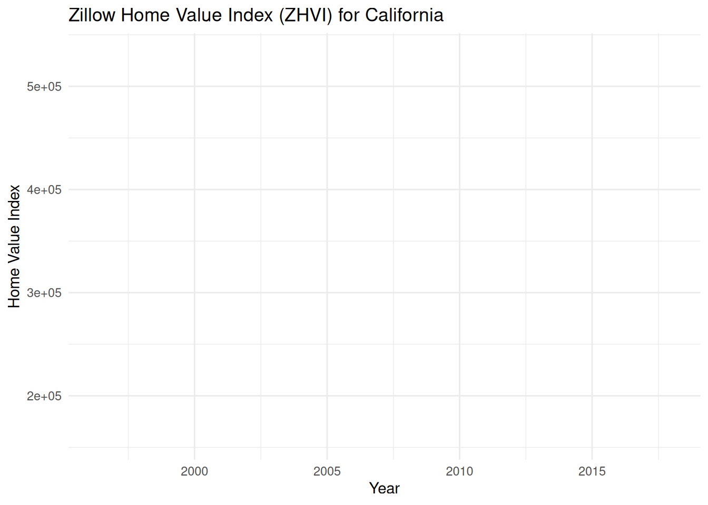

# install.packages("fpp3")
library(fpp3)
library(dplyr)
library(tidyr)
library(ggplot2)
library(ggtime)
library(patchwork)
library(DT)Project 2 - Data Cubbing and Binning
renan
In this post apply binning to pre-process the dataset
For the Project 2 we further processed our dataset by leveraging binning and a data cube structure built on hierarchies .
1. Introduction
Analyzing the State_time_series.csv dataset, which contains granular real estate metrics over time, benefits significantly from data transformation and aggregation. Binning is essential for this process, as it converts continuous variables, such as MedianListingPrice_AllHomes, into discrete, manageable categories (e.g., ‘$150k-$200k’, ‘$200k-$250k’). This discretization simplifies complex data, making it easier to summarize, visualize, and identify trends.
Furthermore, leveraging a data cube structure built on hierarchies allows for powerful, multidimensional analysis. For instance, the Date field isn’t just a single point in time; it’s part of a hierarchy that can be “rolled up” from a specific day to a Month, Quarter, or Year. Similarly, the RegionName (State) could be aggregated into broader geographical regions (e.g., “Northeast”, “West Coast”). By combining these binned and hierarchical dimensions, we can quickly “slice and dice” the data to answer complex questions, such as “How many homes in the $200k-$250k price bin were available in the Northeast region during Q3 2018?” This turns a massive, raw dataset into a flexible tool for gaining actionable insights.
The Zillow Home Value Index or ZHVI is a smoothed, seasonally adjusted measure of the typical home value and market changes across a given region and housing type. It reflects the typical value for homes in the 35th to 65th percentile range.
The Dataset Zillow Economics Data[ZHVI?], can be downloaded:
```{bash}
#!/bin/bash
curl -L -o ~/Downloads/zecon.zip\
https://www.kaggle.com/api/v1/datasets/download/zillow/zecon
```1.1 Load packages
Possible errors makings notes:
```{bash}
Attaching package: ‘ggtime’
The following objects are masked from ‘package:feasts’:
gg_arma, gg_irf, gg_lag, gg_season, gg_subseries, gg_tsdisplay,
gg_tsresiduals
```2. Load the Dataset
The following code will locate the folder datasets and then it will give back the variable datasets_path which you can use to build the path to the desired data to be loaded.
Code
find_git_root <- function(start = getwd()) {
path <- normalizePath(start, winslash = "/", mustWork = TRUE)
while (path != dirname(path)) {
if (dir.exists(file.path(path, ".git"))) return(path)
path <- dirname(path)
}
stop("No .git directory found — are you inside a Git repository?")
}
repo_root <- find_git_root()
datasets_path <- file.path(repo_root, "datasets")
zillow_economics_data_path <- file.path(datasets_path, "zillow-economics-data-01")
state_time_series <- file.path(zillow_economics_data_path, "State_time_series.csv")
all_states_data <- read.csv(state_time_series)3. Data Exploration and Processing
The ‘Date’ column is a character and should be converted to a Date object.
all_states_data$Date <- as.Date(all_states_data$Date)
# str(all_states_data)Exploring the N/As and the structure of the dataset:
# Get the total number of rows for calculating percentages
total_rows <- nrow(all_states_data)
# Create a pretty summary table
na_summary <- all_states_data %>%
# 1. Count NAs for every column
summarise(across(everything(), ~sum(is.na(.)))) %>%
# 2. Pivot the data from wide to long
pivot_longer(everything(),
names_to = "Column",
values_to = "NA_Count") %>%
# 3. (Optional) Filter to only show columns that HAVE NAs
filter(NA_Count > 0) %>%
# 4. (Optional) Add a percentage column
mutate(NA_Percentage = (NA_Count / total_rows) * 100) %>%
# 5. Sort by the highest NA count
arrange(desc(NA_Count))
# Print the clean table
print(na_summary)# A tibble: 80 × 3
Column NA_Count NA_Percentage
<chr> <int> <dbl>
1 PctOfHomesSellingForGain_AllHomes 12609 95.4
2 PctOfHomesSellingForLoss_AllHomes 12609 95.4
3 MedianRentalPrice_5BedroomOrMore 11994 90.8
4 MedianRentalPricePerSqft_5BedroomOrMore 11752 88.9
5 MedianRentalPricePerSqft_Studio 10875 82.3
6 MedianRentalPrice_CondoCoop 10437 79.0
7 MedianRentalPricePerSqft_DuplexTriplex 10293 77.9
8 MedianRentalPrice_Studio 10211 77.3
9 MedianListingPrice_1Bedroom 10205 77.2
10 MedianRentalPrice_DuplexTriplex 10068 76.2
# ℹ 70 more rows# --- 1. Create Date Hierarchy ---
# We parse the Date and extract hierarchy levels
processed_data <- all_states_data %>%
mutate(
Year = year(Date),
Quarter = quarter(Date, with_year = TRUE),
Month = month(Date, label = TRUE)
)# --- 2. Create Bins for a Measure ---
# We bin 'MedianListingPrice_AllHomes' into categories
price_breaks <- c(0, 150000, 200000, 250000, 300000, 500000, Inf)
price_labels <- c(
"Under $150k", "$150k-$200k", "$200k-$250k",
"$250k-$300k", "$300k-$500k", "Over $500k"
)processed_data <- processed_data %>%
mutate(
Price_Bin = cut(MedianListingPrice_AllHomes,
breaks = price_breaks,
labels = price_labels,
right = FALSE) # Bins are [min, max)
)# Show the new hierarchical and binned columns
print("Data with new hierarchy and bins:")[1] "Data with new hierarchy and bins:"glimpse(processed_data %>%
select(RegionName, Date, Year, Quarter, Month, MedianListingPrice_AllHomes, Price_Bin))Rows: 13,212
Columns: 7
$ RegionName <chr> "Alabama", "Arizona", "Arkansas", "Califor…
$ Date <date> 1996-04-30, 1996-04-30, 1996-04-30, 1996-…
$ Year <dbl> 1996, 1996, 1996, 1996, 1996, 1996, 1996, …
$ Quarter <dbl> 1996.2, 1996.2, 1996.2, 1996.2, 1996.2, 19…
$ Month <ord> Apr, Apr, Apr, Apr, Apr, Apr, Apr, Apr, Ap…
$ MedianListingPrice_AllHomes <dbl> NA, NA, NA, NA, NA, NA, NA, NA, NA, NA, NA…
$ Price_Bin <fct> NA, NA, NA, NA, NA, NA, NA, NA, NA, NA, NA…4. Explore ZHVI with Date Hierarchy
For sake of simplicity we are going to focus for now on a single State (California) and the Zillow Home Value Index (ZHVI_AllHomes) over time.
# Let's analyze the Zillow Home Value Index (ZHVI_AllHomes) for "California".
# all_states_data
cali_zhvi <- processed_data %>%
filter(RegionName == "California") %>%
select(Date, ZHVI_AllHomes) %>%
# Remove any missing values for this metric
na.omit()
cali_ts <- cali_zhvi %>%
as_tsibble(index = Date)# We set 'Date' as the 'index' (the time component).
cali_ts_fill_gaps <- cali_zhvi %>%
as_tsibble(index = Date) %>%
fill_gaps()
# If you were analyzing multiple states, you would add a 'key'.
# Example for multiple states (not run here):
# multi_state_ts <- all_states_data %>%
# select(Date, RegionName, ZHVI_AllHomes) %>%
# as_tsibble(index = Date, key = RegionName)Lets see how many N/As after filling the gaps:
# Count total NAs per column
colSums(is.na(cali_ts))
colSums(is.na(cali_ts_fill_gaps))# Inspect the new, focused data frame
head(cali_zhvi) Date ZHVI_AllHomes
1 1996-04-30 157900
2 1996-05-31 157800
3 1996-06-30 157500
4 1996-07-31 157300
5 1996-08-31 157000
6 1996-09-30 156800head(cali_ts)# A tsibble: 6 x 2 [1D]
Date ZHVI_AllHomes
<date> <int>
1 1996-04-30 157900
2 1996-05-31 157800
3 1996-06-30 157500
4 1996-07-31 157300
5 1996-08-31 157000
6 1996-09-30 156800head(cali_ts_fill_gaps)# A tsibble: 6 x 2 [1D]
Date ZHVI_AllHomes
<date> <int>
1 1996-04-30 157900
2 1996-05-01 NA
3 1996-05-02 NA
4 1996-05-03 NA
5 1996-05-04 NA
6 1996-05-05 NAcali_ts %>%
autoplot(ZHVI_AllHomes) +
labs(title = "Zillow Home Value Index (ZHVI) for California",
y = "Home Value Index",
x = "Year") +
theme_minimal()
# This will scan cali_ts and report any gaps
gap_summary <- count_gaps(cali_ts)
# Print the summary
print(gap_summary)# A tibble: 260 × 3
.from .to .n
<date> <date> <int>
1 1996-05-01 1996-05-30 30
2 1996-06-01 1996-06-29 29
3 1996-07-01 1996-07-30 30
4 1996-08-01 1996-08-30 30
5 1996-09-01 1996-09-29 29
6 1996-10-01 1996-10-30 30
7 1996-11-01 1996-11-29 29
8 1996-12-01 1996-12-30 30
9 1997-01-01 1997-01-30 30
10 1997-02-01 1997-02-27 27
# ℹ 250 more rowscali_ts_fill_gaps %>%
autoplot(ZHVI_AllHomes) +
labs(title = "Zillow Home Value Index (ZHVI) for California",
y = "Home Value Index",
x = "Year") +
theme_minimal()
# Inspect the new, focused data frame
# print("cali_zhvi (data frame):")
# DT::datatable(cali_zhvi, options = list(pageLength = 5))
print("cali_ts (tsibble):")[1] "cali_ts (tsibble):"DT::datatable(cali_ts, options = list(pageLength = 5))# print("cali_ts_fill_gaps (tsibble with filled gaps):")
# DT::datatable(cali_ts_fill_gaps, options = list(pageLength = 5))- Create a new ‘Month’ column using the yearmonth() function
- Group by this new explicit month
- Summarise the data (using mean() is safe, but since you have one observation per month, last() or sum() would also work)
- Convert to a tsibble, now indexed by the new ‘Month’ object
cali_ts_monthly <- cali_zhvi %>%
mutate(Month = yearmonth(Date)) %>%
group_by(Month) %>%
summarise(ZHVI_AllHomes = mean(ZHVI_AllHomes, na.rm = TRUE)) %>%
as_tsibble(index = Month)
# Check the new object
print("New Monthly Tsibble:")[1] "New Monthly Tsibble:"head(cali_ts_monthly)# A tsibble: 6 x 2 [1M]
Month ZHVI_AllHomes
<mth> <dbl>
1 1996 Apr 157900
2 1996 May 157800
3 1996 Jun 157500
4 1996 Jul 157300
5 1996 Aug 157000
6 1996 Sep 156800# Note the <mth> tag in the output, indicating it's a monthly tsibble
print("Class of the new index:")[1] "Class of the new index:"class(cali_ts_monthly$Month)[1] "yearmonth" "vctrs_vctr"cali_ts_monthly %>%
autoplot(ZHVI_AllHomes) +
labs(title = "Zillow Home Value Index (ZHVI) for California",
y = "Home Value Index",
x = "Year") +
theme_minimal()
In R, Date objects are stored internally as the number of days that have passed since an “origin” date, which by default is January 1, 1970.
The number 9587 is the number of days since 1970-01-01.
This corresponds to the date April 30, 1996, which is the starting point of your Zillow dataset.
This happens if you (or R) accidentally convert a Date object to a plain number.
The yearmonth object we created in the last step is different. It prints as “1996 Apr” and internally stores the number of months since the 1970 epoch (which would be a much smaller number, like 316).
print("cali_ts_monthly (tsibble with only monthly):")[1] "cali_ts_monthly (tsibble with only monthly):"DT::datatable(cali_ts_monthly, options = list(pageLength = 5))